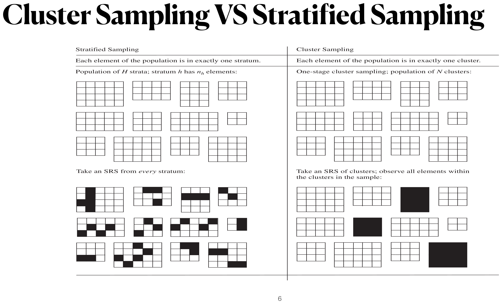
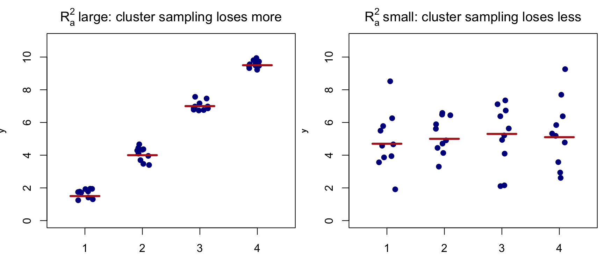
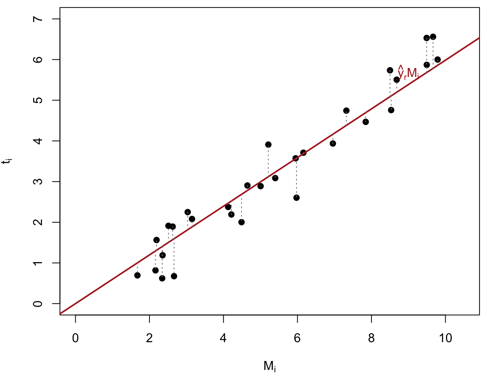
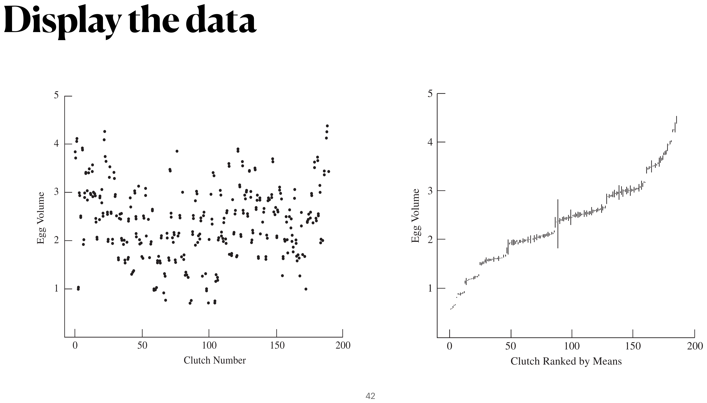

Cluster Sampling
Textbook sections:
Suppose we want to find out how many bicycles are owned by residents in a community of 10,000 households. We could take an SRS of 400 households, or we could divide the community into blocks of about 20 households each and sample every household (or subsample some households) in each of 20 blocks selected at random from the 500 blocks in the community.
The latter plan is an example of cluster sampling. The blocks are the primary sampling units (psus), or clusters. The households are the secondary sampling units (ssus); often the ssus are the elements of the population.

In stratified sampling, every stratum is sampled and precision depends on within-stratum homogeneity. In cluster sampling, only some clusters are sampled and precision depends primarily on the variability between cluster means.
The universe \mathcal U is the population of N psus; \mathcal S is the sample of psus, and \mathcal S_i is the sample of ssus chosen from psu i. The measured quantity is y_{ij} = \text{measurement for the } j\text{th element (ssu) in the } i\text{th psu.}
In cluster sampling, N is the number of psus, not the number of observation units — a departure from earlier chapters where N was the population size in elements.
N = \text{number of psus}, \qquad M_i = \text{number of ssus in psu } i, \qquad M_0 = \sum_{i=1}^N M_i t_i = \sum_{j=1}^{M_i} y_{ij} \quad(\text{psu total}) \qquad\qquad t = \sum_{i=1}^N t_i \quad(\text{population total}) S_t^2 = \frac{1}{N-1}\sum_{i=1}^N \Big(t_i - \frac tN\Big)^2 \quad(\text{population variance of psu totals})
\bar y_U = \frac{\sum_{i=1}^N\sum_{j=1}^{M_i} y_{ij}}{M_0} = \frac{t}{M_0} \quad(\text{population mean}) \bar y_{iU} = \frac{\sum_{j=1}^{M_i} y_{ij}}{M_i} = \frac{t_i}{M_i} \quad(\text{population mean in psu } i) S^2 = \frac{\sum_{i=1}^N\sum_{j=1}^{M_i}(y_{ij}-\bar y_U)^2}{M_0-1} \quad(\text{population variance}) S_i^2 = \frac{\sum_{j=1}^{M_i}(y_{ij}-\bar y_{iU})^2}{M_i-1} \quad(\text{population variance within psu } i)
Let n = number of psus sampled, m_i = number of ssus sampled from psu i: \bar y_i = \frac{\sum_{j\in\mathcal S_i} y_{ij}}{m_i} \quad\qquad \hat t_i = \sum_{j\in\mathcal S_i} \frac{M_i}{m_i}y_{ij} = M_i\bar y_i \hat t_{\text{unb}} = \sum_{i\in\mathcal S} \frac{N}{n}\hat t_i \quad(\text{unbiased estimator of } t) \bar t = \frac{\sum_{i\in\mathcal S} \hat t_i}{n}, \qquad\qquad s_t^2 = \frac{1}{n-1}\sum_{i\in\mathcal S} \big(\hat t_i - \bar t\big)^2
The probability that ssu j in psu i is selected: P(j\text{th ssu of }i\text{th psu selected}) = P(i\text{th psu selected})\times P(j\text{th ssu}\mid i\text{th psu}) = \frac nN \cdot \frac{m_i}{M_i}
So the sampling weight (reciprocal of the selection probability) is w_{ij} = \frac{N}{n}\cdot\frac{M_i}{m_i}, \qquad\qquad \hat t_{\text{unb}} = \sum_{i\in\mathcal S}\sum_{j\in\mathcal S_i} w_{ij}y_{ij}
If psus are blocks and ssus are households, household j in psu i represents (NM_i)/(nm_i) households in the population.
Consider the simplest case, where every psu has the same number of ssus, M_i=m_i=M (all ssus sampled, all clusters same size). This is uncommon in household surveys but does occur in agricultural and industrial sampling.
Since we observe every ssu in each sampled psu, estimating population means or totals is simple: we treat the psu totals t_i as the observations and ignore the individual elements — we effectively have an SRS of n data points \{t_i, i\in\mathcal S\}.
Apply ordinary SRS results to the psu totals \{t_i\}: \bar t = \frac{\sum_{i\in\mathcal S} t_i}{n}, \qquad \hat t = N\bar t, \qquad s_t^2 = \frac{1}{n-1}\sum_{i\in\mathcal S}\Big(t_i-\frac{\hat t}{N}\Big)^2 \text{SE}(\hat t) = N\sqrt{\Big(1-\frac nN\Big)\frac{s_t^2}{n}}
To estimate \bar y_U, divide the estimated total by the number of elements NM: \hat{\bar y} = \frac{\hat t}{NM}, \qquad \text{SE}(\hat{\bar y}) = \frac{1}{M}\sqrt{\Big(1-\frac nN\Big)\frac{s_t^2}{n}} = \frac{\text{SE}(\bar t)}{M}
A student wants to estimate the average GPA in his dormitory. Instead of listing all students and taking an SRS, he notices the dorm consists of 100 suites of 4 students each; he selects 5 suites at random and asks every person in those suites for their GPA:
| Person | Suite 1 | Suite 2 | Suite 3 | Suite 4 | Suite 5 |
|---|---|---|---|---|---|
| 1 | 3.08 | 2.36 | 2.00 | 3.00 | 2.68 |
| 2 | 2.60 | 3.04 | 2.56 | 2.88 | 1.92 |
| 3 | 3.44 | 3.28 | 2.52 | 3.44 | 3.28 |
| 4 | 3.04 | 2.68 | 1.88 | 3.64 | 3.20 |
| Total (t_i) | 12.16 | 11.36 | 8.96 | 12.96 | 11.08 |
The psus are the suites: N=100, n=5, M=4.
\hat t = \frac{100}{5}(12.16+11.36+8.96+12.96+11.08) = 1130.4 \bar t = \frac{1130.4}{100} = 11.304, \qquad s_t^2 = \frac{1}{4}\Big[(12.16-11.304)^2+\cdots+(11.08-11.304)^2\Big] = 2.256 \hat{\bar y} = \frac{1130.4}{400} = 2.826 \text{SE}(\hat{\bar y}) = \sqrt{\Big(1-\frac{5}{100}\Big)\frac{2.256}{(5)(4)^2}} = 0.164
Only the suite totals were used — individual GPAs contributed only through their suite total.
Note
V(\hat{\bar y}) \ne \big(1-\tfrac{n}{N}\big)\dfrac{s_y^2}{n}! We cannot apply the ordinary one-stage SRS variance formula treating all nM=20 students as an SRS from the dorm — the 20 students are not an SRS of individuals, since whole suites are selected together (an ICC/correlation effect).
| Source | df | Sum of Squares |
|---|---|---|
| Between psus | N-1 | \text{SSB} = \sum_{i=1}^N\sum_{j=1}^M (\bar y_{iU}-\bar y_U)^2 |
| Within psus | N(M-1) | \text{SSW} = \sum_{i=1}^N\sum_{j=1}^M (y_{ij}-\bar y_{iU})^2 |
| Total, about \bar y_U | NM-1 | \text{SSTO} = \sum_{i=1}^N\sum_{j=1}^M (y_{ij}-\bar y_U)^2 = (NM-1)S^2 |
Since each psu has the same size M, S_t^2 = \sum_{i=1}^N \frac{(t_i-\bar t_U)^2}{N-1} = \sum_{i=1}^N \frac{M^2(\bar y_{iU}-\bar y_U)^2}{N-1} = M(\text{MSB}) so for one-stage cluster sampling with equal-size clusters, V(\hat t_{\text{cluster}}) = N^2\Big(1-\frac nN\Big)\frac{M(\text{MSB})}{n}
If instead we took an SRS with nM observations, the variance of the estimated total would have been V(\hat t_{\text{SRS}}) = (NM)^2\Big(1-\frac{nM}{NM}\Big)\frac{S^2}{nM} = N^2\Big(1-\frac nN\Big)\frac{MS^2}{n}
Comparing the two: if \text{MSB} > S^2, cluster sampling is less efficient (has larger variance) than an SRS of the same number of elements.
The intraclass correlation coefficient (ICC) measures how similar elements within the same cluster are: \text{ICC} = 1 - \frac{M}{M-1}\cdot\frac{\text{SSW}}{\text{SSTO}}
An alternative measure, valid for unequal cluster sizes too, is the adjusted R^2: R_a^2 = 1 - \frac{\text{MSW}}{S^2}
For equal-sized clusters, the increase in variance from using cluster sampling (instead of an SRS of the same number of elements) is \frac{V(\hat t_{\text{cluster}})}{V(\hat t_{\text{SRS}})} = \frac{\text{MSB}}{S^2} = 1 + \frac{N(M-1)}{N-1}R_a^2
So (M-1)R_a^2 is (approximately) the percentage increase in variance from switching from SRS to cluster sampling.

Figure 1
When cluster means differ a lot relative to within-cluster spread (left), sampling only a few clusters misses most of the population’s variability — cluster sampling loses more information relative to an SRS of the same size.
The unbiased estimator of the total is calculated exactly as before: \hat t_{\text{unb}} = \frac Nn \sum_{i\in\mathcal S} t_i, \qquad \text{SE}(\hat t_{\text{unb}}) = N\sqrt{\Big(1-\frac nN\Big)\frac{s_t^2}{n}}
The key difference from equal-size clusters: the variation among the individual cluster totals t_i is likely to be large when the clusters have very different sizes M_i — a psu with many ssus tends to have a large total just because it has more elements, inflating s_t^2 and hence the variance of \hat t_{\text{unb}}, even before accounting for genuine differences in the y values.
Since \bar y_U = t/M_0, and t_i is usually roughly proportional to M_i (bigger clusters tend to have bigger totals), estimating \bar y_U is a form of ratio estimation with y_i=t_i and x_i=M_i: \hat{\bar y}_r = \frac{\hat t_{\text{unb}}}{\hat M_0} = \frac{\sum_{i\in\mathcal S} t_i}{\sum_{i\in\mathcal S} M_i} = \frac{\sum_{i\in\mathcal S} M_i\bar y_i}{\sum_{i\in\mathcal S} M_i}
This can be far more efficient than \hat t_{\text{unb}}/M_0, since it uses the ratio of totals to sizes rather than the totals alone — removing the size-driven variability in t_i that inflates s_t^2.

Figure 2
From formula (4.10) applied with x_i=M_i, y_i=t_i: \text{SE}(\hat{\bar y}_r) = \sqrt{\Big(1-\frac nN\Big)\frac{1}{n\bar M^2}\cdot\frac{\sum_{i\in\mathcal S}(t_i-\hat{\bar y}_r M_i)^2}{n-1}} where \bar M=\sum_{i\in\mathcal S}M_i/n. The residuals t_i - \hat{\bar y}_r M_i (dotted vertical segments) are typically far less variable than t_i itself.
One-stage cluster samples are common in educational studies, since students are naturally clustered into classrooms or schools. From a population of 187 high-school algebra classes, an investigator takes an SRS of 12 classes and tests every student in them for function knowledge:
| Class | M_i | \bar y_i | t_i |
|---|---|---|---|
| 23 | 20 | 61.5 | 1230 |
| 37 | 26 | 64.2 | 1670 |
| 38 | 24 | 58.4 | 1402 |
| \vdots | \vdots | \vdots | \vdots |
| 108 | 26 | 67.2 | 1746 |
| Total | 299 | 18{,}708 |
\hat{\bar y}_r = \frac{\sum_{i\in\mathcal S}M_i\bar y_i}{\sum_{i\in\mathcal S}M_i} = \frac{18{,}708}{299} = 62.57 \bar M = \frac{299}{12} = 24.92, \qquad \text{SE}(\hat{\bar y}_r) = \sqrt{\Big(1-\frac{12}{187}\Big)\frac{1}{(12)(24.92^2)}\cdot\frac{194{,}827}{11}} = 1.49
where 194{,}827 = \sum_{i\in\mathcal S}(t_i - \hat{\bar y}_r M_i)^2 is computed from the residuals of each class.
Consider a whimsical population of just N=2 “clusters” (kennels) of dogs — kennel A with M_A=30 dogs, and kennel B with M_B=10 dogs. Every dog has exactly 4 legs, so the true population mean is trivially \bar y_U = 4 legs/dog. We take a one-stage cluster sample of n=1 kennel (each chosen with probability 1/2), observing all dogs in it.
t_1 = 30\times 4 = 120, \qquad \hat t_{\text{unb}} = \frac{2}{1}(120) = 240, \qquad \hat{\bar y}_{\text{unb}} = \frac{240}{30+10} = 6
t_2 = 10\times 4 = 40, \qquad \hat t_{\text{unb}} = \frac{2}{1}(40) = 80, \qquad \hat{\bar y}_{\text{unb}} = \frac{80}{30+10} = 2
| \hat{\bar y}_{\text{unb}} | 6 | 2 |
|---|---|---|
| Probability | 1/2 | 1/2 |
E[\hat{\bar y}_{\text{unb}}] = 6\times\tfrac12 + 2\times\tfrac12 = 4 = \bar y_U \quad\text{(unbiased!)}
But \hat{\bar y}_{\text{unb}} is never actually equal to 4 — it is always off by \pm 2, because V(t_i) is huge (kennel sizes 30 vs. 10 are very different), even though every single dog has exactly 4 legs.
For kennel A: \hat{\bar y}_r = \dfrac{30\times4}{30}=4. For kennel B: \hat{\bar y}_r = \dfrac{10\times4}{10}=4.
Both possible samples give exactly \hat{\bar y}_r=4=\bar y_U, so V(\hat{\bar y}_r) = 0
The ratio estimator completely cancels out the cluster-size variability that made \hat{\bar y}_{\text{unb}} so unreliable — this is why ratio estimation (not unbiased estimation) is the standard approach for unequal-size clusters.
When sampling every ssu in a selected psu is too costly, we can subsample:
Since we no longer observe every ssu in a sampled psu, we must estimate each psu total: \hat t_i = \sum_{j\in\mathcal S_i} \frac{M_i}{m_i}y_{ij} = M_i\bar y_i
\hat t_{\text{unb}} = \frac Nn \sum_{i\in\mathcal S} \hat t_i = \sum_{i\in\mathcal S}\sum_{j\in\mathcal S_i} w_{ij}y_{ij}, \qquad w_{ij} = \frac{NM_i}{nm_i}
The variance now has two sources: variability between psus, and variability from subsampling within each sampled psu: V(\hat t_{\text{unb}}) = N^2\Big(1-\frac nN\Big)\frac{S_t^2}{n} + \frac Nn \sum_{i=1}^N \Big(1-\frac{m_i}{M_i}\Big)M_i^2\frac{S_i^2}{m_i}
The first term is exactly the one-stage cluster variance; the second term is the extra cost of not observing every ssu in each sampled psu.
As before, estimating \bar y_U is a ratio estimation problem with y_i=\hat t_i=M_i\bar y_i and x_i=M_i: \hat{\bar y}_r = \frac{\sum_{i\in\mathcal S}\hat t_i}{\sum_{i\in\mathcal S}M_i} = \frac{\sum_{i\in\mathcal S}M_i\bar y_i}{\sum_{i\in\mathcal S}M_i} \hat V(\hat{\bar y}_r) = \frac{1}{\bar M^2}\Big(1-\frac nN\Big)\frac{s_r^2}{n} + \frac{1}{nN\bar M^2}\sum_{i\in\mathcal S}M_i^2\Big(1-\frac{m_i}{M_i}\Big)\frac{s_i^2}{m_i} where s_r^2 = \frac{1}{n-1}\sum_{i\in\mathcal S}(M_i\bar y_i - M_i\hat{\bar y}_r)^2. The second term is often negligible compared with the first.
Data from Arnold’s (1991) study of egg size and volume of American Coot eggs in Minnedosa, Manitoba. We look at the volumes of a subsample of eggs within clutches (nests) having at least two eggs measured — the clutches are the psus, and eggs within a clutch are the ssus.

The right panel orders clutches by their mean volume, connecting the two measured eggs in each clutch — there is wide variation between clutches (clutch means climb steadily left to right), but the two eggs within a clutch usually agree closely. This indicates eggs within the same clutch are much more similar than two randomly chosen eggs from different clutches.
| Clutch | M_i | \bar y_i | \hat t_i |
|---|---|---|---|
| 1 | 13 | 3.86 | 50.24 |
| 2 | 13 | 4.19 | 54.52 |
| 3 | 6 | 0.92 | 5.50 |
| \vdots | \vdots | \vdots | \vdots |
| 184 | 12 | 3.48 | 41.81 |
| Total (n=184) | 1757 | 4375.95 |
\hat{\bar y}_r = \frac{4375.95}{1757} = 2.49, \qquad s_r^2 = \frac{11{,}439.58}{183} = 62.51, \qquad \bar M = \frac{1757}{184}=9.549
Since the total number of clutches N is unknown but presumably very large, the psu-level fpc (1-n/N)\approx 1, and the second (within-clutch) variance term is negligible relative to the first: \text{SE}(\hat{\bar y}_r) = \frac{1}{9.549}\sqrt{\frac{62.51}{184}} = 0.061, \qquad \widehat{\text{CV}}(\hat{\bar y}_r) = \frac{0.061}{2.49} = 0.0245